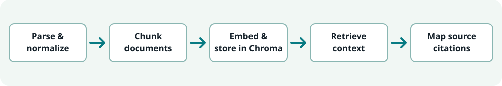

Implemented in source
Document parsing and normalization, token-aware chunking, embedding and Chroma storage, workspace-scoped retrieval, citation mapping and API modules.
Case study / Retrieval
An in-progress document question-answering system. Its current implementation and status are separate from the private Client Research Assistant Bot.
The public repository contains Python ingestion, chunking, embedding, Chroma retrieval and citation-mapping modules, alongside a FastAPI backend. It remains in progress. The inspected dependency list does not establish LangChain use, so that technology is not claimed here.

Document parsing and normalization, token-aware chunking, embedding and Chroma storage, workspace-scoped retrieval, citation mapping and API modules.
A complete ingestion-to-answer run, citation accuracy, answer quality, deployment readiness and repeatable integration coverage remain open.
Components and tests exist, but mocked tests are not proof of a fully exercised ingestion-to-answer pipeline. No production deployment, latency, answer-quality score or reduced analyst time is claimed. The separate local pgvector/MinIO project is not represented here.